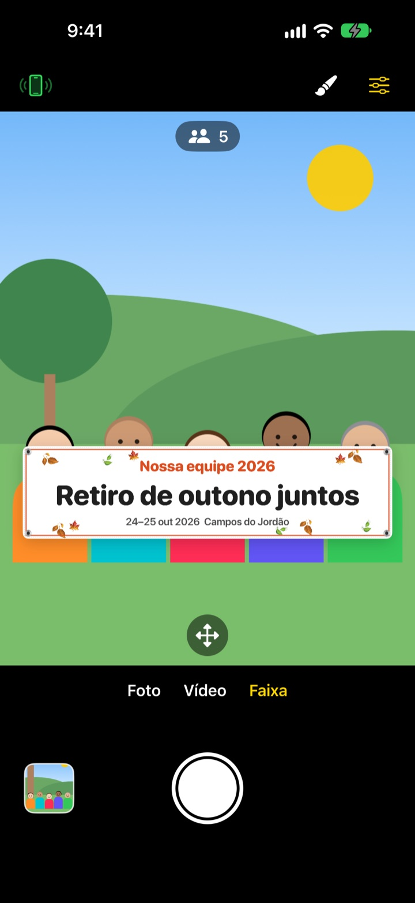
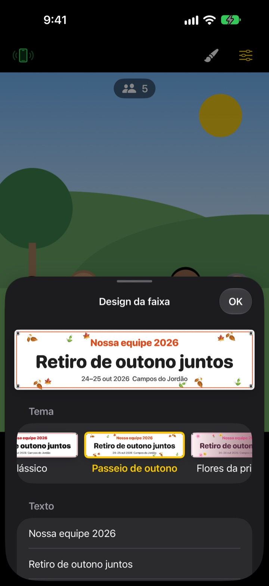

A foto em grupo com faixa.
Sem mandar imprimir.
Escreva o texto, escolha um tema e a faixa aparece bem na frente da turma. O iPhone de um amigo vira controle remoto com uma leitura de QR, e quem tira a foto também aparece nela.
Todos os recursos são grátis. Requer iOS 17 ou posterior.

Monte uma faixa
Mude o texto e toque em um tema. Aperte o obturador e, como no app, ele conta 3 segundos antes de tirar a foto.
Mandar fazer uma faixa só para uma foto?
Você encomenda, leva até o passeio e depois ninguém sabe onde guardar. E como não sobra ninguém para fotografar, sempre tem alguém de fora. O ShutterLink coloca a faixa na imagem da câmera e transforma o iPhone de um amigo em controle remoto, para todo mundo sair na foto segurando a faixa.
A faixa da sua turma em um minuto
Escolha entre 13 temas, como passeio de outono, flores da primavera, festa de fim de ano, aniversário, dia do esporte, formatura, casamento e workshop da empresa, e escreva até três linhas do seu jeito.
Mude fundo, fonte, enfeites, cores e proporção, e coloque seu logo. Escolha tecido, lona ou papel: a faixa de tecido cede, amassa e balança com o vento como uma de verdade.

Controle remoto sem instalar nada
Toque no botão de controle no canto superior esquerdo e um QR code aparece. Seu amigo aponta a Câmera do iPhone e o ShutterLink Remote abre na hora como App Clip e se conecta.
A imagem ao vivo no controle mostra até a faixa, então é só enquadrar e apertar o obturador. Cada foto chega na hora no iPhone que está como controle, e um amigo sem o app consegue salvar e compartilhar ali mesmo.
Comece em três passos
- 1
Apoie o iPhone
Abra o ShutterLink e coloque o iPhone num tripé ou numa prateleira.
- 2
Posicione a faixa
Escolha Faixa embaixo, defina texto e tema no botão de pincel e toque no chão onde a turma vai ficar.
- 3
Levante a mão
Levante a palma ou aperte o obturador no controle. O timer conta e tira a foto.
Feito para fotos em grupo
- Gesto da palma · disparo por palmas
- Levante a palma aberta para a câmera ou bata palmas forte uma vez para iniciar o timer
- Disparo por sorriso
- Tira a foto sozinho quando todo mundo sorri de olhos abertos
- Timer de 3 · 5 · 10 · 20 · 30 s
- Uma voz faz a contagem regressiva, o flash pisca junto e o controle vibra na sua mão
- Pedir a todos que olhem para a câmera
- Toque e o iPhone que fotografa chama a atenção da turma em voz alta
- Sequência de 3 · 5 fotos
- Separa a melhor foto, em que todos estão de olhos abertos. Dá para trocar por outra na galeria
- Pessoas · bordas · nível
- Conta quantas pessoas estão no quadro, avisa se alguém ficou na borda e mostra um nível quando o iPhone inclina
- Intervalos de 3 s a 1 min
- Registre um pôr do sol ou o andamento de um projeto em intervalos regulares
- Controles da câmera
- Foco e exposição com um toque, compensação de exposição, flash, grade, zoom de 0,5x até 10x conforme o modelo, câmera frontal e traseira, vídeo
- Modo simples
- O controle mostra só um botão de disparo grande que qualquer pessoa consegue usar
- Botões de volume · Controle da Câmera
- Dispare direto no iPhone que fotografa, sem controle remoto
No modo Faixa não dá para usar flash, sequência, zoom nem câmera frontal. Timer, disparo pela palma e controle remoto funcionam normalmente.
Todos os recursos são grátis
Grátis
- Modo Faixa com 13 temas
- Controle remoto sem instalação (App Clip)
- Disparo por palma, palmas e sorriso, mais timer
- Melhor foto, contagem de pessoas e nível
- Vídeo e fotos em intervalos
Deixe uma gorjeta (opcional)
- Envie uma gorjeta pequena, média ou grande nos Ajustes
- Gorjetas não liberam nem bloqueiam nada
Não é assinatura. Você paga uma vez, só quando der a gorjeta.
Sem anúncios e sem conta.
Perguntas frequentes
Do que eu preciso?
Instale o ShutterLink no iPhone que vai fotografar (iOS 17 ou posterior). O iPhone que será o controle não precisa instalar nada, só de internet na primeira vez que abrir o App Clip. Deixe o Bluetooth ligado nos dois e os aparelhos perto, normalmente a até 10 m.
Leio o QR, mas o App Clip não abre.
Confira se o iPhone que está como controle tem internet. Você também pode digitar no ShutterLink Remote o código de 4 dígitos do iPhone que fotografa e tocar em Conectar. Veja ainda se os App Clips não estão bloqueados em Ajustes › Tempo de Uso › Conteúdo e Privacidade.
Fica parado em “Procurando a câmera…”.
O ShutterLink precisa estar aberto na tela do iPhone que fotografa. Confira se o Bluetooth está ligado em Ajustes › Bluetooth nos dois iPhone. O código muda sempre que o app abre; se você abriu de novo, use o QR ou o código novos e toque em Tentar de novo.
Aparece “Permissão de Bluetooth negada”.
Ative o ShutterLink em Ajustes › Privacidade e Segurança › Bluetooth. O controle é um App Clip e pode não aparecer na lista. Nesse caso, leia o QR de novo e toque em Permitir quando for pedido.
A imagem ao vivo trava ou fica borrada.
A imagem ao vivo é reduzida de propósito para passar pelo Bluetooth. Fotos e vídeos são salvos na qualidade total do iPhone que fotografa. Paredes, pessoas ou distância podem causar travadas, mas o obturador e os outros controles continuam funcionando.
Onde ficam minhas fotos?
No app Fotos do iPhone que fotografa e na galeria do app. O controle também recebe uma cópia, mas não salva sozinho, então salve ou compartilhe antes de fechar o controle. Se nada chegar ao Fotos, permita o ShutterLink em Ajustes › Privacidade e Segurança › Fotos.
Meus vídeos estão sem som.
Ative o ShutterLink em Ajustes › Privacidade e Segurança › Microfone.
Dá para conectar mais de um controle?
Sim. Vários iPhone podem se conectar ao mesmo tempo com o mesmo QR ou código, e qualquer um deles dispara a mesma câmera.
A conexão cai enquanto estou fotografando.
O ShutterLink mantém a tela acesa enquanto está aberto. Bloquear o iPhone pelo botão lateral ou trocar de app derruba a conexão, então deixe o app na tela durante as fotos.
Minhas fotos são enviadas para algum lugar?
Não. Os dois iPhone se conectam direto por Bluetooth, e fotos e vídeos ficam só no iPhone que fotografa e no controle conectado. Funciona na montanha ou na praia sem sinal, e não precisa de conta.
Não resolveu ou encontrou um bug? Escreva para leeo@kakao.com. Informe o modelo e a versão do iOS dos dois iPhone para agilizar.